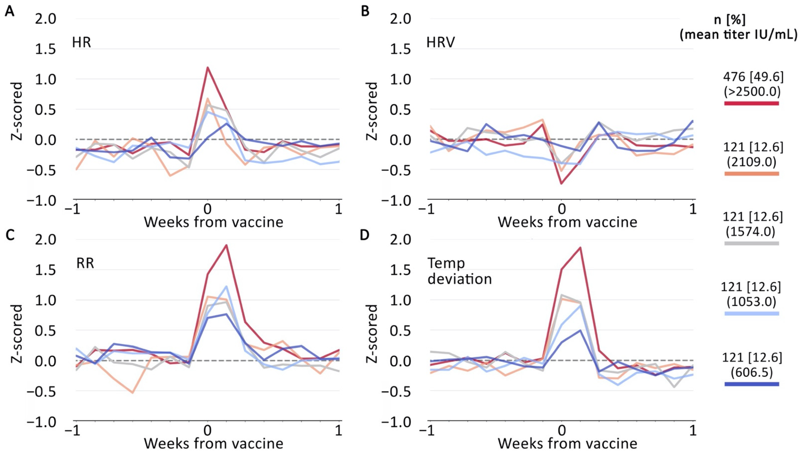

Plots depicting (A) changes in heart rate (HR); (B) heart rate variability (HRV); (C) respiratory rate (RR); and (D) temperature deviation the nights surrounding the second
injection for Pfizer-BioNTech and Moderna-NAIAD vaccine recipients, combined, Values are z-scored for participants' pre-vaccination baseline period.